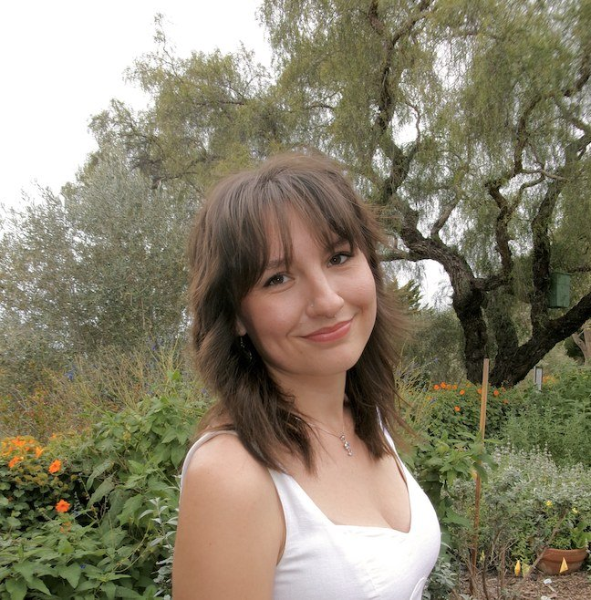

Brooke Murphy
I'm an environmental scientist finishing an M.S. in Environmental Science and Management at Cal Poly, San Luis Obispo.
My work sits where water and GIS meet: groundwater, irrigation demand and the climate data behind them. I've sampled water and soil, surveyed reservoirs with RTK GPS, and built the models and maps that turn field and satellite data into decisions.
Experience
-
Fall 2026 – present
GIS Developer
Cal Poly, San Luis Obispo · with Dr. Aakash AhamedBuilding out the open-source curriculum site for Cal Poly's introductory GIS courses.
-
2025 – present
Graduate Researcher
Cal Poly, San Luis Obispo · ARI NextGen FellowEvaluating a remote sensing-informed machine learning model for reference evapotranspiration across California.
-
Summer 2026
Groundwater Management Intern
Valley Water, Santa Clara CountyGroundwater data QA/QC, well records, PFAS soil-core logging, recharge-pond and domestic well sampling, and StoryMaps on seawater intrusion, sea-level rise and land subsidence.
-
2024 – 2025
Program Coordinator
Santa Barbara County Parks, Cachuma LakePlankton tows, substrate sampling and vessel inspection for aquatic invasive species prevention.
-
Summer 2022
Natural Resources Management Intern
Santa Clara County ParksLed a conservation study of California milkweed on public lands and supported prescribed burns with CAL FIRE.
-
Fall 2020
Biological Monitoring Volunteer
Bureau of Land Management, Cascade-Siskiyou National MonumentSurveyed soils, conifer health and biodiversity in clear-cut forest.
Education
M.S., Environmental Science and Management
Cal Poly, San Luis Obispo · expected December 2026
B.A., Environmental Studies and B.A., Religious Studies
Westmont College · 2023, magna cum laude